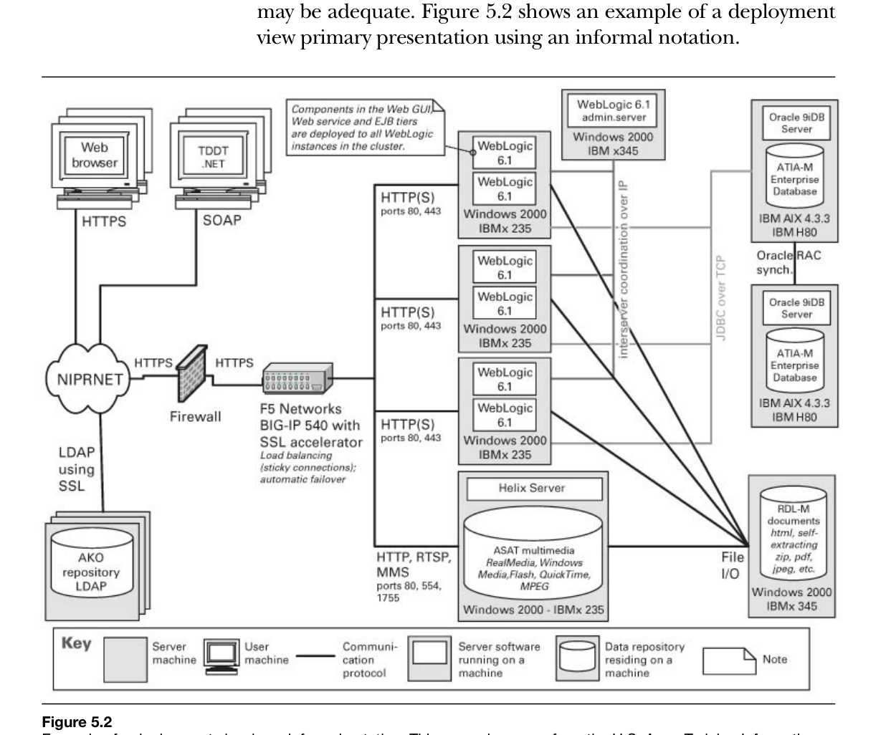
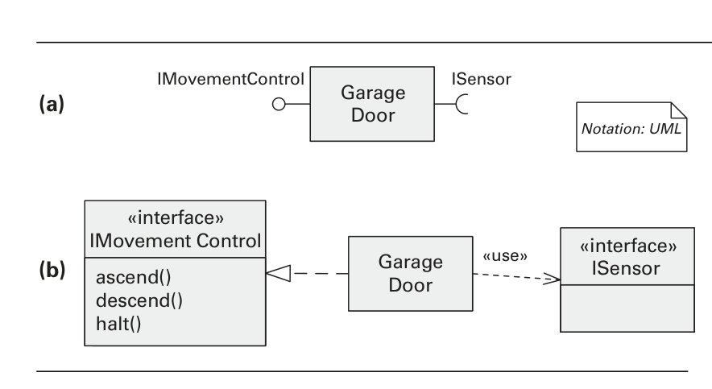
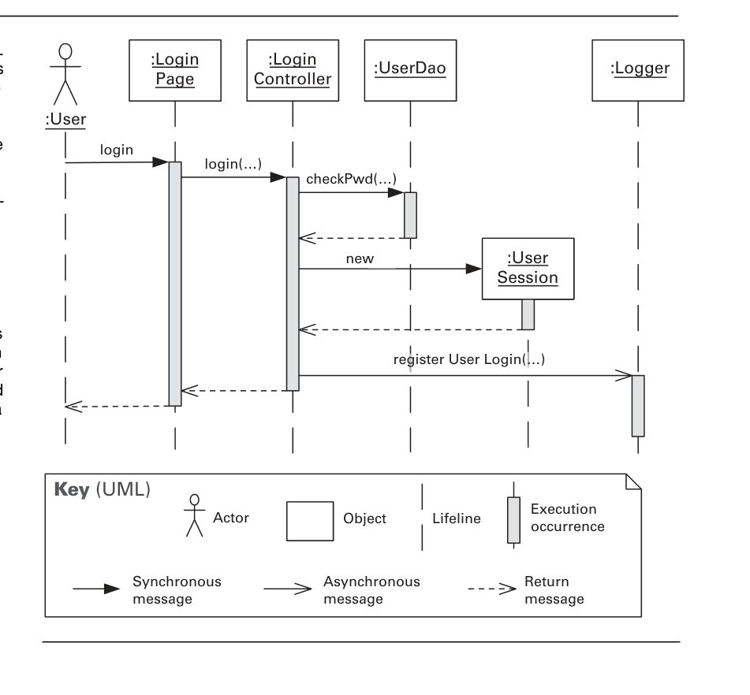
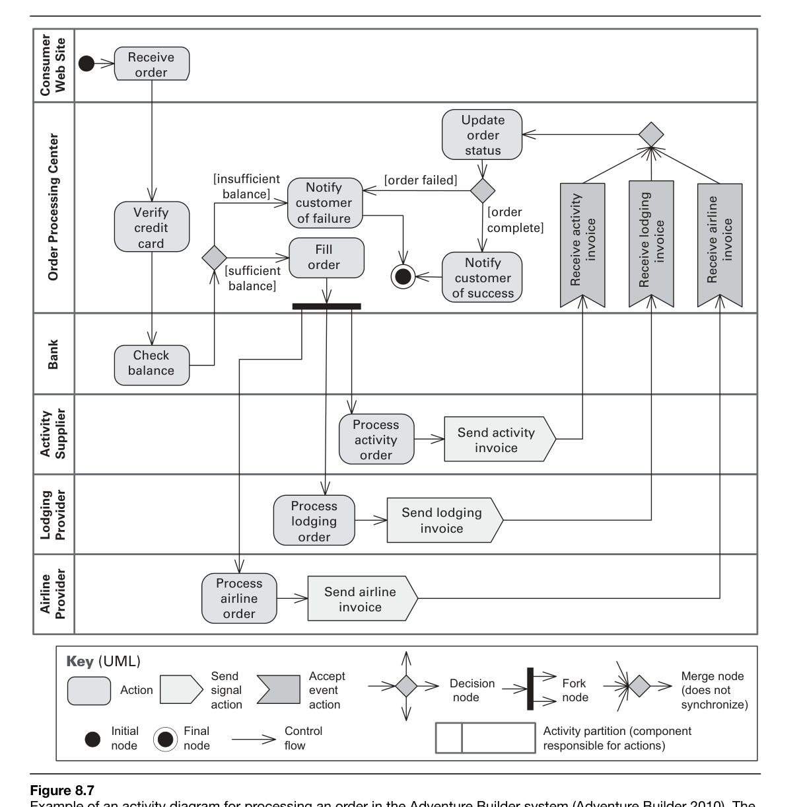
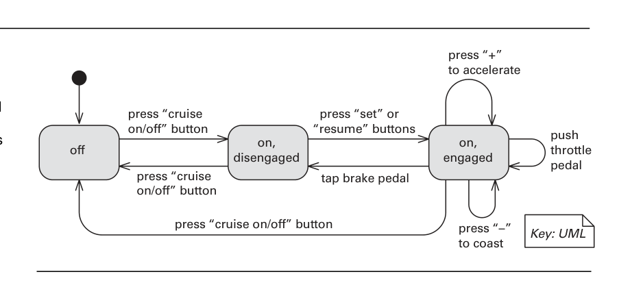
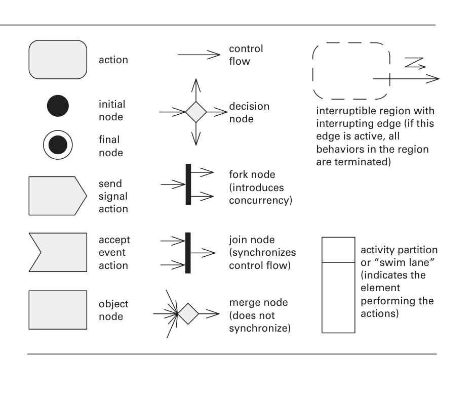
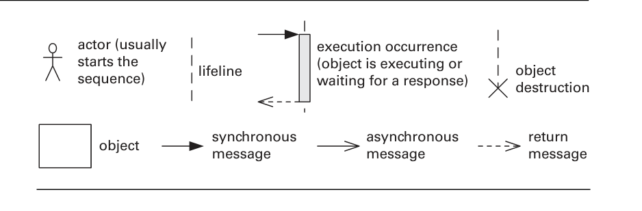
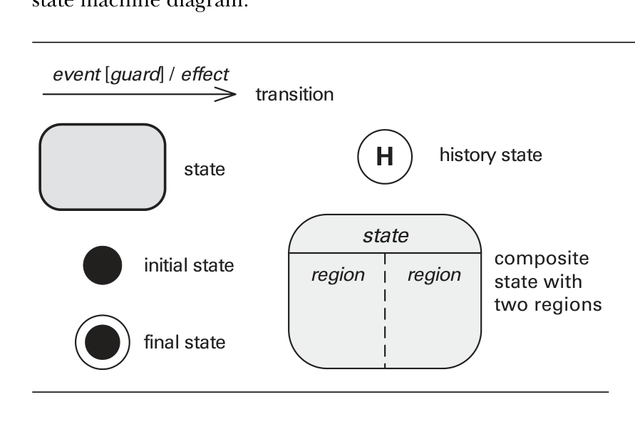

3주차 필독 자료 정리 · 영문 / 한국어 (English / Korean)
Sources: [Clements10] Documenting Software Architectures, 2nd ed. (Allocation/Deployment, Interfaces, Behavior, UML, Documentation Package, Rationale) · [Bass13] §26 The Cloud · [docker18] Docker · [flow.ci16] CI · [Yoder19] Blue-Green & Canary · [Keeling17b] ADR
Software does not run in a vacuum: software elements must interact with the non-software environmental elements of the world in which the system is developed, deployed, and executed—computing and communication hardware, file systems, and development teams. Allocation views capture the mapping between a software architecture and these environmental structures, and this section introduces them before turning to the most prominent example, the deployment style.
소프트웨어는 진공 속에서 실행되지 않는다. 소프트웨어 요소는 시스템이 개발, 배포, 실행되는 세계의 비(非)소프트웨어 환경 요소—즉 컴퓨팅 및 통신 하드웨어, 파일 시스템, 개발 팀—와 상호작용해야 한다. 할당 뷰(allocation view)는 소프트웨어 아키텍처와 이러한 환경 구조 사이의 사상(mapping)을 표현하며, 본 절은 이를 먼저 개관한 뒤 가장 대표적인 사례인 배포 스타일(deployment style)로 넘어간다.
An allocation view presents a mapping between software elements—drawn from either a module view or a component-and-connector (C&C) view—and the non-software environmental elements of the software's environment. It can be thought of as the result of combining a software architecture view with a view from a different kind of architecture, such as a hardware architecture or an organizational architecture. The chapter identifies three common allocation styles: the deployment style (software to computing hardware), the install style (software to the production file system), and the work assignment style (modules to teams).
할당 뷰는 모듈 뷰 또는 컴포넌트-커넥터(C&C) 뷰에서 가져온 소프트웨어 요소와 소프트웨어 환경의 비소프트웨어 환경 요소 사이의 사상을 제시한다. 이는 소프트웨어 아키텍처 뷰를, 하드웨어 아키텍처나 조직 아키텍처와 같은 다른 종류의 아키텍처 뷰와 결합한 결과로 볼 수 있다. 이 장은 세 가지 일반적 할당 스타일을 제시한다. 즉 배포 스타일(소프트웨어를 컴퓨팅 하드웨어에 사상), 설치 스타일(install style)(소프트웨어를 운영 환경의 파일 시스템에 사상), 그리고 작업 할당 스타일(work assignment style)(모듈을 팀에 사상)이다.
The relation common to every allocation style is the allocated-to relation. A single software element may be allocated to multiple environmental elements, and multiple software elements may be allocated to one environmental element; if such allocations change over time, the architecture is said to be dynamic with respect to that allocation. Both software and environmental elements carry properties: a software element states the properties it requires of the environment, while an environmental element states the properties it provides. The usual goal of an allocation view is to compare required against provided properties to judge whether the allocation will succeed—for example, whether a processor executes fast enough to meet a component's required response time.
모든 할당 스타일에 공통되는 관계는 할당(allocated-to) 관계이다. 하나의 소프트웨어 요소가 여러 환경 요소에 할당될 수 있고, 여러 소프트웨어 요소가 하나의 환경 요소에 할당될 수도 있다. 이러한 할당이 시간에 따라 변하면 그 할당에 관하여 아키텍처가 동적(dynamic)이라고 한다. 소프트웨어 요소와 환경 요소는 모두 속성을 가진다. 소프트웨어 요소는 환경에 대해 요구하는(required) 속성을, 환경 요소는 소프트웨어에 제공하는(provided) 속성을 기술한다. 할당 뷰의 통상적 목표는 요구 속성과 제공 속성을 비교하여 그 할당이 성공할지를 판단하는 것이다. 예컨대 어떤 프로세서가 컴포넌트의 요구 응답 시간을 충족할 만큼 충분히 빠르게 실행되는지를 따진다.
In the deployment style, software elements native to a C&C style are allocated to the hardware of the computing platform on which the software executes. A valid allocation is one that ensures the requirements expressed by the software elements are satisfied by the characteristics of the hardware element(s). This is the mapping through which qualities such as performance can ultimately be analyzed, because it ties runtime software to the physical machinery that runs it.
배포 스타일에서는 C&C 스타일에 속한 소프트웨어 요소가 소프트웨어를 실행하는 컴퓨팅 플랫폼의 하드웨어에 할당된다. 유효한 할당이란 소프트웨어 요소가 표현한 요구 사항이 하드웨어 요소의 특성에 의해 충족됨을 보장하는 할당이다. 이 사상은 런타임 소프트웨어를 그것을 구동하는 물리적 기계에 연결하므로, 성능과 같은 품질을 궁극적으로 분석할 수 있게 하는 통로가 된다.
The environmental elements are physical units that store, transmit, or compute data—processing nodes (CPUs), communication channels, memory stores, and data stores—with properties such as CPU speed, memory size, disk capacity, bandwidth, and fault tolerance. The software elements are typically C&C-view runtime entities (processes, threads, ports, shared memory), with properties such as resource consumption, resource requirements/constraints, and safety-criticality. The core relation is a specialized allocated-to form showing on which physical units the software resides at a moment in time; when the allocation is dynamic, additional relations apply: migrates-to (the element moves between processors), copy-migrates-to (a copy is sent while the original is retained), and execution-migrates-to (only the active execution moves while code residency is unchanged), each governed by a migration-trigger property.
환경 요소는 데이터를 저장·전송·계산하는 물리적 단위로서 프로세싱 노드(CPU), 통신 채널, 메모리 저장소, 데이터 저장소 등을 가리키며, CPU 속도, 메모리 크기, 디스크 용량, 대역폭, 결함 허용성 등의 속성을 가진다. 소프트웨어 요소는 대개 C&C 뷰의 런타임 개체(프로세스, 스레드, 포트, 공유 메모리)이며, 자원 소비, 자원 요구·제약, 안전 임계성(safety-critical) 등의 속성을 가진다. 핵심 관계는 특정 시점에 소프트웨어가 어느 물리적 단위에 상주하는지를 보여 주는 특수화된 할당(allocated-to) 형태이다. 할당이 동적인 경우에는 추가 관계가 적용된다. 즉 migrates-to(요소가 프로세서 사이를 이동), copy-migrates-to(원본을 유지한 채 복사본을 전송), execution-migrates-to(코드 상주는 그대로이고 활성 실행만 이동)가 있으며, 각각은 이주 트리거(migration trigger) 속성에 의해 제어된다.
A deployment view supports analysis of performance, availability, reliability, and security, and is used by testers to understand runtime dependencies, by integrators to plan integration and integration testing, and even to support hardware cost estimation. Performance is tuned by reallocating software to hardware—eliminating processor bottlenecks, balancing utilization, and collocating units that communicate frequently or with high bandwidth. Availability and reliability are addressed by placing copies of components on separate processors or migrating them before an imminent failure, and security is shaped by hardware configuration, limiting services per host, and using firewalls, routers, and bridges. A caution: a deployment view is not the entire software architecture, and one should not force a relationship such as one layer per processor (layers are not tiers).
배포 뷰는 성능, 가용성, 신뢰성, 보안의 분석을 지원하며, 테스터는 런타임 의존성을 이해하기 위해, 통합 담당자는 통합 및 통합 테스트를 계획하기 위해 이를 사용하고, 하드웨어 비용 산정의 근거로도 쓰인다. 성능은 소프트웨어를 하드웨어에 재할당함으로써 조정되는데, 프로세서 병목 제거, 사용률 균형화, 그리고 빈번하거나 고대역폭으로 통신하는 단위들의 동일 위치 배치(collocation)가 그 방법이다. 가용성과 신뢰성은 컴포넌트 복사본을 별개의 프로세서에 배치하거나 임박한 장애 직전에 이주시킴으로써 다루어지고, 보안은 하드웨어 구성, 호스트별 서비스 제한, 방화벽·라우터·브리지의 사용으로 형성된다. 주의할 점은 배포 뷰가 소프트웨어 아키텍처 전체가 아니라는 것이며, 계층마다 프로세서 하나를 강제하는 식의 관계(계층은 티어가 아니다)를 억지로 만들어서는 안 된다.
Deployment views can be drawn informally or formally. Informal notations use boxes, lines, and arrows—often stylized hardware icons, with shading and color to distinguish element types; software elements are listed inside or beside the hardware they are allocated-to, and a simple table may suffice for simple structures. Formal notations include AADL and SysML, architecture description languages that supply vocabulary for binding software to hardware and analyzing performance, reliability, safety, and security. UML offers a deployment diagram: a graph of three-dimensional nodes (processors) connected by communication associations, with components residing on nodes, migration shown via the «becomes» stereotype, communication paths typed by stereotypes (e.g., «10-T Ethernet»), and properties given as attribute name-value pairs.
배포 뷰는 비형식적으로도 형식적으로도 그릴 수 있다. 비형식적 표기법은 상자, 선, 화살표를 사용하며, 흔히 양식화된 하드웨어 아이콘과 음영·색상으로 요소 유형을 구분한다. 소프트웨어 요소는 자신이 할당된(allocated-to) 하드웨어 안이나 옆에 나열되고, 단순한 구조라면 표 하나로도 충분하다. 형식적 표기법으로는 AADL과 SysML이 있는데, 이들은 소프트웨어를 하드웨어에 결속(binding)하고 성능·신뢰성·안전성·보안을 분석하기 위한 어휘를 제공하는 아키텍처 기술 언어이다. UML은 배포 다이어그램을 제공한다. 이는 통신 연관으로 연결된 3차원 노드(프로세서)들의 그래프로서, 컴포넌트가 노드 위에 상주하고, 이주는 «becomes» 스테레오타입으로 표현되며, 통신 경로는 스테레오타입(예: «10-T Ethernet»)으로 유형이 지정되고, 속성은 이름-값 쌍 속성으로 주어진다.

[Clements10] §5.1, 5.2 (Deployment Style)
Chapter 26 frames the cloud as the dominant deployment environment for modern distributed systems. Before designing such a system, an architect must understand what makes a platform a cloud—its defining characteristics—and the layered service models (IaaS, PaaS, SaaS) that determine which responsibilities belong to the provider and which remain with the consumer. These choices directly shape availability, scalability, security, and cost.
26장은 클라우드를 현대 분산 시스템의 지배적인 배포 환경으로 설명한다. 이러한 시스템을 설계하기 전에 아키텍트는 어떤 플랫폼을 클라우드로 만드는지—그 정의적 특성—그리고 어떤 책임이 제공자에게 속하고 어떤 책임이 소비자에게 남는지를 결정하는 계층적 서비스 모델(IaaS, PaaS, SaaS)을 이해해야 한다. 이러한 선택은 가용성, 확장성, 보안, 비용에 직접적인 영향을 미친다.
The widely adopted NIST definition identifies five essential characteristics of cloud computing: on-demand self-service (consumers provision computing capability automatically, without human interaction with the provider), broad network access (capabilities are available over the network through standard mechanisms), resource pooling (the provider's resources are pooled to serve many consumers using a multi-tenancy model), rapid elasticity (capabilities scale out and in quickly, appearing unlimited to the consumer), and measured service (usage is metered, enabling a transparent pay-per-use billing model).
널리 채택된 NIST 정의는 클라우드 컴퓨팅의 다섯 가지 본질적 특성을 제시한다. 온디맨드 셀프서비스(소비자가 제공자와의 사람 간 상호작용 없이 자동으로 컴퓨팅 자원을 프로비저닝함), 광범위한 네트워크 접근(표준 메커니즘을 통해 네트워크상에서 기능을 사용할 수 있음), 자원 풀링(제공자의 자원이 멀티테넌시 모델을 사용하여 다수의 소비자에게 서비스하도록 풀로 묶임), 신속한 탄력성(탄력성(elasticity): 기능이 빠르게 확장·축소되어 소비자에게는 무한한 것처럼 보임), 측정된 서비스(사용량이 계량되어 투명한 종량제(measured service) 과금 모델을 가능하게 함)이다.
Resource pooling means the provider operates a large shared pool of physical and virtual resources (compute, storage, network) that are dynamically assigned and reassigned according to demand. Because many independent consumers share this pool—multi-tenancy—the provider achieves high utilization and economies of scale, while the consumer is typically unaware of the exact physical location of resources. This sharing is what makes pay-per-use economics possible, but it also raises isolation, performance, and security concerns the architect must address.
자원 풀링은 제공자가 수요에 따라 동적으로 할당·재할당되는 물리적·가상적 자원(컴퓨팅, 스토리지, 네트워크)의 대규모 공유 풀을 운영함을 의미한다. 다수의 독립적인 소비자가 이 풀을 공유하기 때문에—멀티테넌시—제공자는 높은 활용도와 규모의 경제를 달성하며, 소비자는 일반적으로 자원의 정확한 물리적 위치를 알지 못한다. 이러한 공유가 종량제 경제성을 가능하게 하지만, 동시에 아키텍트가 다루어야 할 격리, 성능, 보안 문제를 야기한다.
Rapid elasticity lets a system acquire and release resources in minutes, matching capacity to fluctuating load rather than provisioning for peak demand in advance. For the architect this is the central value proposition: it enables horizontal scalability, transforms large up-front capital costs into variable operating costs, and supports availability strategies such as redundant instances across failure zones. Designing to exploit elasticity—stateless services, externalized state, automated scaling—is a recurring theme in cloud architecture.
신속한 탄력성은 시스템이 몇 분 만에 자원을 확보하고 반환하게 하여, 최대 수요를 미리 대비해 프로비저닝하는 대신 변동하는 부하에 용량을 맞추도록 한다. 아키텍트에게 이는 핵심 가치 제안이다. 수평적 확장성을 가능하게 하고, 막대한 초기 자본 비용을 변동하는 운영 비용으로 전환하며, 장애 구역 전반에 걸친 중복 인스턴스 같은 가용성 전략을 지원한다. 탄력성을 활용하도록 설계하는 것—무상태 서비스, 외부화된 상태, 자동화된 확장—은 클라우드 아키텍처에서 반복되는 주제이다.
The cloud is offered through three layered service models that differ in how much the provider manages. With IaaS (Infrastructure as a Service), the provider supplies virtualized compute, storage, and networking, while the consumer manages the operating system, middleware, and applications—maximum control, maximum responsibility. With PaaS (Platform as a Service), the provider also manages the OS, runtime, and middleware, so the consumer focuses only on application code and data. With SaaS (Software as a Service), the provider manages the entire stack and delivers a complete application over the network; the consumer merely configures and uses it.
클라우드는 제공자가 얼마나 많은 부분을 관리하는지에 따라 구분되는 세 가지 계층적 서비스 모델로 제공된다. IaaS(Infrastructure as a Service)에서는 제공자가 가상화된 컴퓨팅, 스토리지, 네트워킹을 공급하고, 소비자가 운영체제, 미들웨어, 애플리케이션을 관리한다—최대의 제어권과 최대의 책임을 갖는다. PaaS(Platform as a Service)에서는 제공자가 운영체제, 런타임, 미들웨어까지 관리하므로 소비자는 애플리케이션 코드와 데이터에만 집중한다. SaaS(Software as a Service)에서는 제공자가 전체 스택을 관리하고 네트워크를 통해 완전한 애플리케이션을 제공하며, 소비자는 이를 구성하고 사용하기만 한다.
Moving from IaaS to PaaS to SaaS shifts operational burden from the consumer to the provider but reduces flexibility and control. IaaS suits teams needing custom infrastructure or migrating legacy systems; PaaS accelerates development by removing infrastructure management; SaaS minimizes the consumer's effort for commodity functionality. The architect chooses the level that best balances control, development speed, operational cost, and the quality attributes—security, performance, availability—the system must achieve.
IaaS에서 PaaS를 거쳐 SaaS로 이동하면 운영 부담이 소비자에서 제공자로 옮겨가지만 유연성과 제어권은 줄어든다. IaaS는 맞춤형 인프라가 필요하거나 레거시 시스템을 마이그레이션하는 팀에 적합하고, PaaS는 인프라 관리를 제거하여 개발을 가속하며, SaaS는 범용 기능에 대한 소비자의 노력을 최소화한다. 아키텍트는 제어권, 개발 속도, 운영 비용, 그리고 시스템이 달성해야 할 품질 속성—보안, 성능, 가용성—을 가장 잘 균형 잡는 수준을 선택한다.
Independent of the service model, a cloud is provisioned through one of four deployment models. A public cloud is open to the general public and operated by a provider over the open internet. A private cloud is dedicated to a single organization, on- or off-premises, offering greater control and isolation. A community cloud is shared by several organizations with common concerns (such as compliance or mission). A hybrid cloud composes two or more of these, linked so that data and applications can move between them—commonly used to keep sensitive workloads private while bursting to public capacity under load.
서비스 모델과 무관하게 클라우드는 네 가지 배포 모델 중 하나로 프로비저닝된다. 퍼블릭 클라우드는 일반 대중에게 개방되어 있으며 제공자가 개방형 인터넷을 통해 운영한다. 프라이빗 클라우드는 온프레미스 또는 오프프레미스로 단일 조직에 전용되어 더 큰 제어권과 격리를 제공한다. 커뮤니티 클라우드는 공통 관심사(예: 규정 준수나 임무)를 가진 여러 조직이 공유한다. 하이브리드 클라우드는 이들 중 둘 이상을 결합하여 데이터와 애플리케이션이 그 사이를 이동할 수 있도록 연결한 것으로—민감한 워크로드는 프라이빗하게 유지하면서 부하 시 퍼블릭 용량으로 확장(버스팅)하는 데 흔히 사용된다.
[Bass13] §26.1, 26.2 — Cloud characteristics and service models
Docker is an open platform for developing, shipping, and running applications inside lightweight, portable units called containers. Unlike a virtual machine, which bundles a full guest operating system on top of a hypervisor, a container shares the host machine's OS kernel and isolates only the application and its dependencies. This makes containers far more lightweight, fast to start, and efficient in their use of system resources.
도커는 컨테이너라고 부르는 가볍고 이식성 높은 단위 안에서 애플리케이션을 개발, 배포, 실행하기 위한 오픈 플랫폼이다. 하이퍼바이저 위에 전체 게스트 운영체제를 함께 담는 가상 머신과 달리, 컨테이너는 호스트 머신의 OS 커널을 공유하고 애플리케이션과 그 의존성만 격리한다. 덕분에 컨테이너는 훨씬 가볍고 빠르게 시작되며 시스템 자원을 효율적으로 사용한다.
Docker uses a client–server architecture. The Docker client (the docker CLI) talks to the Docker daemon (dockerd), which does the heavy lifting of building, running, and distributing your containers. The client and daemon communicate through a REST API, over a UNIX socket or a network interface, so they can run on the same host or the client can connect to a remote daemon.
도커는 클라이언트–서버 아키텍처를 사용한다. 도커 클라이언트(docker CLI)는 도커 데몬(dockerd)과 통신하며, 데몬이 컨테이너를 빌드, 실행, 배포하는 실제 작업을 수행한다. 클라이언트와 데몬은 UNIX 소켓 또는 네트워크 인터페이스를 통해 REST API로 통신하므로, 같은 호스트에서 실행하거나 클라이언트가 원격 데몬에 연결할 수도 있다.
The Docker daemon (dockerd) listens for Docker API requests and manages Docker objects such as images, containers, networks, and volumes. A daemon can also communicate with other daemons to manage Docker services across hosts. When you type a command like docker run, the client sends it to the daemon, which carries it out.
도커 데몬(dockerd)은 도커 API 요청을 수신하고 이미지, 컨테이너, 네트워크, 볼륨 같은 도커 객체를 관리한다. 데몬은 다른 데몬과도 통신하여 여러 호스트에 걸친 도커 서비스를 관리할 수 있다. docker run 같은 명령을 입력하면 클라이언트가 이를 데몬에 전달하고 데몬이 실행한다.
An image is a read-only template containing the instructions for creating a container; it is built in stacked layers, typically from a Dockerfile, where each instruction adds one layer. A container is a runnable instance of an image—you can create, start, stop, and delete it. In short, the image is the blueprint and the container is the running (or stoppable) instance created from it.
이미지는 컨테이너를 만들기 위한 지침을 담은 읽기 전용 템플릿으로, 보통 Dockerfile로부터 여러 레이어가 쌓여 빌드되며 각 지침이 하나의 레이어를 추가한다. 컨테이너는 이미지의 실행 가능한 인스턴스로서 생성, 시작, 중지, 삭제할 수 있다. 요컨대 이미지는 설계도이고 컨테이너는 그로부터 만들어진 실행 중(또는 중지 가능한) 인스턴스다.
A registry stores Docker images. Docker Hub is a public registry that anyone can use, and Docker looks there by default; you can also run a private registry. Running docker pull downloads required images from the configured registry, while docker push uploads your image so others can pull it.
레지스트리는 도커 이미지를 저장한다. 도커허브는 누구나 사용할 수 있는 공개 레지스트리이며 도커가 기본으로 참조하는 곳이지만, 사설 레지스트리를 운영할 수도 있다. docker pull을 실행하면 설정된 레지스트리에서 필요한 이미지를 내려받고, docker push는 다른 사용자가 받을 수 있도록 이미지를 업로드한다.
Docker is written in Go and builds on Linux kernel features. It uses namespaces to provide the isolated workspace of a container—each container runs in a separate set of namespaces so it cannot see other processes—and control groups (cgroups) to limit and account for the resources (CPU, memory, I/O) that a container may use.
도커는 Go로 작성되었으며 리눅스 커널 기능 위에 구축된다. 컨테이너의 격리된 작업 공간을 제공하기 위해 네임스페이스를 사용하여 각 컨테이너가 별도의 네임스페이스 집합에서 실행되어 다른 프로세스를 보지 못하게 하고, 컨트롤 그룹(cgroups)을 사용하여 컨테이너가 사용할 수 있는 자원(CPU, 메모리, I/O)을 제한하고 측정한다.
[docker18] Docker overview — Docker Architecture
Continuous integration is a development practice in which team members integrate their work into a shared mainline frequently — often several times a day. Each integration is verified by an automated build & automated tests, so that integration problems are detected and fixed as early as possible rather than accumulating until a painful merge at the end.
지속적 통합(CI)은 팀 구성원이 자신의 작업을 공유된 메인라인에 자주 — 흔히 하루에 여러 번 — 통합하는 개발 관행입니다. 각 통합은 자동화된 빌드와 자동화된 테스트로 검증되므로, 통합 문제가 마지막에 고통스러운 병합으로 쌓이는 대신 가능한 한 일찍 발견되고 수정됩니다.
The flow is straightforward: a developer commits changes to version control, the CI server detects the change, then triggers an automated build followed by automated tests. The result is fast feedback — the team learns within minutes whether the change integrates cleanly. If the build breaks, fixing it becomes the top priority and is repaired immediately.
흐름은 단순합니다. 개발자가 변경 사항을 버전 관리 시스템에 커밋하면 CI 서버가 변경을 감지하고, 이어서 자동화된 빌드와 자동화된 테스트를 실행합니다. 그 결과 빠른 피드백이 제공되어, 팀은 변경이 깔끔하게 통합되는지를 몇 분 안에 알 수 있습니다. 빌드가 깨지면 그것을 고치는 일이 최우선이 되며 즉시 복구됩니다.
CI rests on a set of disciplined practices: maintain a single source repository, automate the build, and make it a self-testing build. Everyone commits to the mainline frequently, every commit triggers a build, and the build is kept fast so feedback stays quick. The guiding rule is to fail fast — surface problems the moment they appear.
CI는 일련의 규율 있는 관행 위에 세워집니다. 단일 소스 저장소를 유지하고, 빌드를 자동화하며, 그것을 자가 테스트 빌드로 만듭니다. 모두가 메인라인에 자주 커밋하고, 모든 커밋이 빌드를 유발하며, 빌드는 피드백이 빠르게 유지되도록 신속하게 관리됩니다. 핵심 원칙은 빠른 실패(fail fast)로 — 문제가 나타나는 순간 드러내는 것입니다.
By integrating continuously, teams avoid integration hell — the high-risk, painful merges that result from letting branches diverge for long periods. Defects are detected early, the codebase is kept in a known-good, always-releasable state, and developers gain the confidence to change code freely because regressions are caught quickly.
지속적으로 통합함으로써 팀은 통합 지옥 — 브랜치를 오랜 기간 분기시킨 결과 발생하는 위험하고 고통스러운 병합 — 을 피합니다. 결함이 일찍 발견되고, 코드베이스는 검증된 양호한 상태이자 언제든 릴리스 가능한 상태로 유지되며, 회귀가 빠르게 잡히므로 개발자는 자유롭게 코드를 변경할 자신감을 얻습니다.
Continuous integration is the foundation for the broader pipeline. Continuous delivery extends CI by automating the release process so that a known-good build can be deployed to production at any time with a single decision, while continuous deployment goes one step further and automatically releases every change that passes the pipeline.
지속적 통합(CI)은 더 넓은 파이프라인의 토대입니다. 지속적 전달(CD)은 릴리스 과정을 자동화하여 검증된 양호한 빌드를 언제든 단 한 번의 결정으로 프로덕션에 배포할 수 있도록 CI를 확장하며, 지속적 배포는 한 걸음 더 나아가 파이프라인을 통과한 모든 변경을 자동으로 릴리스합니다.
[flow.ci16] Introduction to Continuous Integration
Modern systems must ship new versions continuously while keeping the service available. The central problem is deploying a new version with zero-downtime (or minimal disruption) and low risk, while retaining the ability to roll back quickly if the new version misbehaves. Blue-green deployment and canary release are two complementary patterns that solve this by controlling how production traffic is routed to old versus new code.
현대 시스템은 서비스를 계속 가용하게 유지하면서도 새 버전을 끊임없이 출시해야 한다. 핵심 문제는 새 버전을 무중단 배포(또는 최소한의 중단)와 낮은 위험으로 배포하면서, 새 버전에 문제가 생기면 신속하게 롤백할 수 있는 능력을 유지하는 것이다. 블루-그린 배포와 카나리 릴리스는 운영 트래픽을 구 버전과 신 버전 중 어디로 보낼지 제어함으로써 이 문제를 푸는 상호 보완적인 두 패턴이다.
Blue-green deployment runs two identical production environments side by side: Blue, which is the current live version serving real users, and Green, where the new version is deployed and tested. Production traffic is routed to Blue while the team installs and validates the release on Green in isolation, without affecting users.
블루-그린 배포는 동일한 두 운영 환경을 나란히 운영한다. 블루(Blue)는 실제 사용자에게 서비스하는 현재 라이브 버전이고, 그린(Green)은 새 버전을 배포하고 테스트하는 환경이다. 팀이 그린에서 격리된 상태로 릴리스를 설치하고 검증하는 동안 운영 트래픽은 블루로 라우팅되므로 사용자에게 영향을 주지 않는다.
Once Green is verified, the load balancer (or router) is switched so that all production traffic now flows to Green, which becomes the live environment. Because the cutover is just a routing change, it gives near-zero-downtime releases; and if a problem surfaces, the team simply switches the router back to Blue for an almost instant rollback. The costs are running two full environments and carefully handling shared database/state migrations so both versions remain compatible during the switch.
그린이 검증되면 로드 밸런서(또는 라우터)를 전환하여 이제 모든 운영 트래픽이 그린으로 흐르게 하고, 그린이 라이브 환경이 된다. 전환이 단지 라우팅 변경일 뿐이므로 무중단에 가까운 릴리스가 가능하며, 문제가 드러나면 라우터를 다시 블루로 전환하기만 하면 거의 즉각적인 롤백이 이루어진다. 비용은 두 개의 완전한 환경을 운영해야 한다는 점과, 전환 중 두 버전이 호환되도록 공유 데이터베이스/상태 마이그레이션을 신중히 다뤄야 한다는 점이다.
Canary release rolls the new version out gradually rather than all at once. The new version is first exposed to a small subset of users or servers — the canary — while the rest continue on the old version. The team monitors metrics and error rates on this canary group; if it stays healthy, the percentage of traffic on the new version is increased incrementally until it reaches 100%, otherwise the release is rolled back.
카나리 릴리스는 새 버전을 한 번에 모두가 아니라 점진적 출시 방식으로 내보낸다. 새 버전은 먼저 소수의 사용자 또는 서버 집합, 즉 카나리에게 노출되고 나머지는 계속 구 버전을 사용한다. 팀은 이 카나리 그룹의 지표와 오류율을 모니터링하며, 건강한 상태가 유지되면 새 버전이 받는 트래픽 비율을 100%에 도달할 때까지 단계적으로 늘리고, 그렇지 않으면 릴리스를 롤백한다.
The key benefit is that it limits the blast radius: if the new version is faulty, only the small canary population is affected, not the whole user base. Because the canary serves real production traffic, it provides realistic testing and progressive confidence, and the side-by-side old/new split also enables A/B-style observation and comparison of the two versions.
핵심 이점은 영향 범위를 제한한다는 것이다. 새 버전에 결함이 있어도 전체 사용자 기반이 아니라 소수의 카나리 집단만 영향을 받는다. 카나리가 실제 운영 트래픽을 처리하기 때문에 현실적인 테스트와 점진적 신뢰 확보가 가능하며, 구/신 버전을 나란히 두는 분할은 두 버전에 대한 A/B 방식의 관찰과 비교도 가능하게 한다.
The two patterns differ mainly in how the switch happens. Blue-green deployment is an all-at-once cutover between two whole environments, optimized for instant rollback and zero-downtime; canary release is a gradual, percentage-based shift that trades instant switching for a much smaller blast radius and real-traffic validation at each step. Both rely fundamentally on load balancer/router control to direct traffic and on monitoring to decide whether to proceed or roll back, and the two can even be combined.
두 패턴은 주로 전환이 일어나는 방식에서 다르다. 블루-그린 배포는 두 전체 환경 사이의 일괄 전환으로 즉각적 롤백과 무중단 배포에 최적화되어 있고, 카나리 릴리스는 비율 기반의 점진적 이동으로 즉각 전환 대신 훨씬 작은 영향 범위와 각 단계의 실트래픽 검증을 얻는다. 두 패턴 모두 근본적으로 트래픽을 보내기 위한 로드 밸런서/라우터 제어와, 진행할지 롤백할지 판단하기 위한 모니터링에 의존하며, 둘을 함께 결합할 수도 있다.
[Yoder19] pp. 4–6 (Blue-Green and Canary)
An interface is a boundary across which two elements meet and interact or communicate. Because interfaces are what make analysis and system building possible, documenting the interfaces of the elements shown in a view is a critical part of documenting that view. This reading covers what an interface is, the principles governing interfaces, and how to decide what to disclose and how to show interfaces in diagrams.
인터페이스는 두 요소가 만나 상호작용하거나 통신하는 경계이다. 인터페이스가 있어야 분석과 시스템 구축이 가능하므로, 뷰에 나타난 요소들의 인터페이스를 문서화하는 일은 그 뷰를 문서화하는 데 있어 핵심적인 부분이다. 이 절은 인터페이스가 무엇인지, 인터페이스를 지배하는 원칙들, 그리고 무엇을 공개할지와 다이어그램에서 인터페이스를 어떻게 나타낼지를 다룬다.
An interface is the boundary across which elements interact, and an interface document specifies what the architect chooses to make publicly known so other entities can interact with the element. An element is used by actors — other elements, users, or systems (internal or external) that interact with it through its interface via calls, requests, data streams, shared memory, or message passing. The points of interaction are called resources: a function, method, data stream, global variable, message endpoint, event trigger, or any addressable facility within the interface. Thus an interface consists of one or more resources available for consumption by actors; for a class, these resources are typically methods.
인터페이스는 요소들이 상호작용하는 경계이며, 인터페이스 문서는 다른 개체들이 그 요소와 상호작용할 수 있도록 아키텍트가 공개하기로 선택한 내용을 명세한다. 요소는 액터(actor)에 의해 사용되는데, 액터란 시스템의 내부 또는 외부에 있으면서 호출, 요청, 데이터 스트림, 공유 메모리, 메시지 전달 등을 통해 인터페이스를 거쳐 그 요소와 상호작용하는 다른 요소, 사용자, 또는 시스템이다. 이러한 상호작용 지점을 자원(resource)이라 하며, 이는 함수, 메서드, 데이터 스트림, 전역 변수, 메시지 엔드포인트, 이벤트 트리거 등 인터페이스 내의 주소 지정 가능한 모든 설비를 말한다. 따라서 인터페이스는 액터가 소비할 수 있는 하나 이상의 자원으로 구성되며, 클래스의 경우 이 자원들은 보통 메서드라 불린다.
Describing an element's interface means stating what other elements can depend on when using it; designing one means deciding which services and properties are externally visible and which are not. Everything externally visible becomes a contract — a promise that the element will fulfill its obligations — and conversely any implementation that does not violate the contract is a valid one. An interaction extends beyond functionality and state changes: for example, if A calls B, the time B takes to return control is part of B's interface because it may affect A's behavior.
요소의 인터페이스를 기술한다는 것은 다른 요소들이 그것을 사용할 때 무엇에 의존할 수 있는지를 명시하는 것이고, 인터페이스를 설계한다는 것은 어떤 서비스와 속성을 외부에 보이게 하고 어떤 것을 숨길지를 결정하는 것이다. 외부에 보이는 모든 것은 계약(contract), 즉 요소가 그 의무를 이행하리라는 약속이 되며, 반대로 그 계약을 위반하지 않는 모든 구현은 유효한 구현이다. 상호작용은 기능과 상태 변화를 넘어선다. 예를 들어 A가 B를 호출할 때 B가 제어를 반환하기까지 걸리는 시간은 A의 동작에 영향을 줄 수 있으므로 B의 인터페이스의 일부이다.
Several principles govern interfaces: all elements have interfaces (the architect chooses which aspects to document); an interface is separate from its implementation (enabling multiple, e.g. platform-specific, implementations of the same interface); an element can have multiple interfaces, each a cohesive set of resources serving a different class of actor, supporting separation of concerns, differing access levels, and evolution (keep the old interface and add a new one). Multiple actors may interact through one interface simultaneously, though synchronization constraints may limit concurrency. Interfaces can be extended by generalization, factoring shared resources (initialization, exception conditions, error handling, semantics) into a common parent. It is also sometimes useful to distinguish interface types from interface instances.
인터페이스를 지배하는 몇 가지 원칙이 있다. 모든 요소는 인터페이스를 가진다(아키텍트가 어떤 측면을 문서화할지 결정한다). 인터페이스는 구현과 분리되어 있어 같은 인터페이스에 대한 여러(예: 플랫폼별) 구현이 가능하다. 한 요소는 여러 인터페이스를 가질 수 있으며, 각 인터페이스는 서로 다른 부류의 액터에게 봉사하는 응집된 자원 집합으로서 관심사 분리, 서로 다른 접근 수준, 그리고 진화(옛 인터페이스를 유지하고 새 인터페이스를 추가)를 지원한다. 여러 액터가 하나의 인터페이스를 통해 동시에 상호작용할 수 있으나, 동기화 제약이 동시성을 제한할 수 있다. 인터페이스는 일반화(generalization)로 확장될 수 있어 공통 자원(초기화, 예외 조건, 오류 처리, 의미)을 공통 부모로 분리할 수 있다. 또한 인터페이스 타입과 인터페이스 인스턴스를 구별하는 것이 유용할 때도 있다.
Elements not only provide interfaces but also require them. An element interacts with its environment by using resources or assuming certain behavior; without these required resources it cannot function correctly (e.g. an element may require Internet connectivity). A required interface is documented with the same template and the same information as a provided interface — resources, syntax, semantics, error handling, quality-attribute characteristics, and variation points. If another element already provides what you need, you simply refer to its provided interface; but if no provider exists yet, documenting a required interface guides forthcoming development and later may become the provider's provided-interface documentation. Documenting required interfaces also clarifies an element's reusability, and linking required to provided interfaces (e.g. UML's socket-and-lollipop) confirms every element has what it needs.
요소는 인터페이스를 제공할 뿐만 아니라 요구하기도 한다. 요소는 자원을 사용하거나 환경이 특정하게 동작하리라 가정함으로써 환경과 상호작용하며, 이러한 요구 자원이 없으면 올바로 작동할 수 없다(예: 인터넷 연결을 요구할 수 있음). 요구 인터페이스(required interface)는 제공 인터페이스(provided interface)와 동일한 템플릿과 동일한 정보 — 자원, 구문, 의미, 오류 처리, 품질 속성 특성, 변이점 — 로 문서화한다. 다른 요소가 이미 필요한 것을 제공한다면 그것의 제공 인터페이스를 참조하면 되지만, 아직 제공자가 없다면 요구 인터페이스를 문서화하여 향후 개발을 안내하며 이는 나중에 제공자의 제공 인터페이스 문서가 될 수 있다. 요구 인터페이스 문서화는 요소의 재사용성도 명확히 하며, 요구 인터페이스와 제공 인터페이스를 연결(예: UML의 소켓-롤리팝 표기)하면 모든 요소가 필요한 것을 갖추었음을 확인할 수 있다.
Although an interface comprises all aspects of an element's interaction with its environment, what you document is more limited. Writing down every possible interaction is impractical and undesirable; expose only what users need in order to interact with the element. Properties a developer observes that are artifacts of the implementation and are not in the interface documentation are subject to change and used at the developer's own risk. Because different stakeholders need different information, separate sections may be needed. Interfaces are documented as part of a view; when an interface appears in more than one view, document it once and refer to it elsewhere (or package it separately). A module-view interface and its C&C-view counterpart are often identical — document it in the more useful view — but when they map without being identical (e.g. a Java class split across SOAP and REST services), document them separately and record the mapping.
인터페이스는 요소가 환경과 갖는 상호작용의 모든 측면을 포함하지만, 문서화하는 내용은 그보다 제한적이다. 가능한 모든 상호작용을 적는 것은 비현실적이고 바람직하지도 않으므로, 사용자가 요소와 상호작용하는 데 필요한 것만 공개한다. 개발자가 관찰하더라도 구현의 부산물이며 인터페이스 문서에 없는 속성은 변경될 수 있으므로 개발자의 책임 하에 사용된다. 이해관계자마다 필요한 정보가 다르므로 별도의 절이 필요할 수 있다. 인터페이스는 뷰의 일부로 문서화하며, 둘 이상의 뷰에 나타나면 한 번만 문서화하고 다른 곳에서는 참조한다(또는 별도로 패키징). 모듈 뷰의 인터페이스와 C&C 뷰의 대응물은 흔히 동일하므로 더 유용한 뷰에서 문서화하되, 동일하지 않게 대응될 때(예: 하나의 자바 클래스가 SOAP와 REST 서비스로 나뉠 때)는 따로 문서화하고 그 매핑을 기록한다.
An interface may or may not have an identity of its own. If element A provides a single interface used by no other element, it needs no name — it is simply A's interface. If an element provides two or more interfaces, identify them (e.g. I1, I2) and document them separately; if a single interface is provided by two or more elements, give it an identity and document it independently. The amount of detail varies with the interface's importance and the stage of design: early on it may be sketchy (a module "provides an operation to locate an order"), later more elaborate (locateOrder(orderId) with semantics), and eventually refined to final syntax (OrderBean locateOrderById(long orderId)).
인터페이스는 자체적인 정체성을 가질 수도, 갖지 않을 수도 있다. 요소 A가 다른 어떤 요소도 제공하지 않는 단일 인터페이스를 제공한다면 이름이 필요 없으며 그저 A의 인터페이스이다. 한 요소가 둘 이상의 인터페이스를 제공하면 (예: I1, I2로) 식별하여 따로 문서화하고, 하나의 인터페이스를 둘 이상의 요소가 제공하면 정체성을 부여하여 독립적으로 문서화한다. 상세 정도는 인터페이스의 중요도와 설계 단계에 따라 달라진다. 초기에는 개략적일 수 있고("주문을 찾는 오퍼레이션을 제공"), 이후 더 정교해지며(locateOrder(orderId)와 그 의미), 결국 최종 구문으로 정련된다(OrderBean locateOrderById(long orderId)).
The existence of interfaces can be shown in primary presentations with most architecture notations — typically a symbol on the boundary of an element's icon. Existence can even be implied without an explicit symbol: a relation from A to B whose type involves an interaction implies the interaction occurs through B's interface. In UML, a provided interface is a lollipop and a required interface is a socket; alternatively an interface can be drawn as a classifier box with the «interface» stereotype, which lets its operations be listed and is useful when multiple elements realize the same interface. Showing an independent interface box expresses substitutability — any element realizing the interface can be used (the variability of interchangeable implementations).
인터페이스의 존재는 대부분의 아키텍처 표기법으로 기본 표현(primary presentation)에 나타낼 수 있으며, 보통 요소 아이콘의 경계에 기호로 표시한다. 명시적 기호 없이도 존재가 함축될 수 있다. A에서 B로 가는 관계의 유형이 상호작용을 포함하면 그 상호작용은 B의 인터페이스를 통해 일어난다고 함축된다. UML에서 제공 인터페이스는 롤리팝(lollipop)으로, 요구 인터페이스는 소켓(socket)으로 나타낸다. 대안으로 인터페이스를 «interface» 스테레오타입을 가진 분류자 박스로 그릴 수 있는데, 이렇게 하면 오퍼레이션을 나열할 수 있고 여러 요소가 같은 인터페이스를 실현할 때 유용하다. 독립된 인터페이스 박스를 보이는 것은 대체 가능성을 표현하여, 그 인터페이스를 실현하는 어떤 요소든 사용할 수 있음(교체 가능한 구현의 변이성)을 나타낸다.

[Clements10] §7.1 Overview, §7.2.1 Interface Documentation
Documenting the behavior of an architecture complements the structural views by describing how elements interact over time. It yields benefits during both development and maintenance: it helps stakeholders understand a system, reason about quality-related goals, and identify problems such as deadlocks and bottlenecks. Whereas structural relations show all potential interactions—few of which are active at any instant—behavior documentation clarifies the actual steps and states involved in operations.
아키텍처의 동작(behavior)을 문서화하는 것은 요소들이 시간에 따라 어떻게 상호작용하는지를 기술함으로써 구조적 뷰를 보완한다. 이는 개발과 유지보수 양쪽에서 이점을 준다. 즉 시스템을 이해하고, 품질 관련 목표를 추론하며, 교착 상태(deadlock)나 병목과 같은 문제를 식별하는 데 도움이 된다. 구조적 관계가 모든 잠재적 상호작용을 보여 주는 반면—그중 특정 순간에 활성화되는 것은 거의 없다—동작 문서화는 연산에 관여하는 실제 단계와 상태를 명확히 한다.
Reasoning about properties such as a system's potential to deadlock, its ability to finish a task in time, or its maximum memory use requires more than the characteristics of individual elements—it also requires the patterns of interaction among them. Behavior documentation adds this missing information.
시스템이 교착 상태(deadlock)에 빠질 가능성, 원하는 시간 내에 작업을 완료할 능력, 또는 최대 메모리 소비량과 같은 특성을 추론하려면 개별 요소의 특성만으로는 부족하며 요소들 사이의 상호작용 패턴도 필요하다. 동작 문서화(behavior documentation)는 이 빠진 정보를 더해 준다.
Specifically, behavior documentation reveals: the ordering of interactions among elements, opportunities for concurrency, time dependencies (at a specific time or after an interval), possible states of the system or its parts, and usage patterns for resources such as memory, CPU, or network. Sequence diagrams and statecharts in UML are examples of notations that capture such information.
구체적으로 동작 문서화는 다음을 드러낸다. 요소 간 상호작용의 순서(ordering), 동시성(concurrency)의 기회, 시간 의존성(특정 시각 또는 일정 시간 경과 후), 시스템이나 그 일부의 가능한 상태(states), 그리고 메모리·CPU·네트워크 같은 자원의 사용 패턴이다. UML의 시퀀스 다이어그램(sequence diagram)과 상태차트(statechart)가 이러한 정보를 담는 표기법의 예이다.
Sequence and activity diagrams are trace-oriented notations: a trace is a sequence of activities or interactions describing the system's response to a specific stimulus in a specific state. A trace is not a complete behavioral model; it has a narrow focus, scoped to the elements involved in one scenario, which makes it easier to design and communicate.
시퀀스 다이어그램과 활동 다이어그램은 트레이스 지향(trace-oriented) 표기법이다. 트레이스(trace)는 특정 상태에서 특정 자극(stimulus)에 대한 시스템의 응답을 기술하는 활동 또는 상호작용의 시퀀스이다. 트레이스는 완전한 동작 모델이 아니며, 하나의 시나리오에 관여하는 요소로 범위가 한정되어 초점이 좁기 때문에 설계하고 전달하기가 더 쉽다.
A UML sequence diagram shows interactions among element instances pulled from the structural documentation, with two dimensions: vertical for time and horizontal for the instances. Each instance has a lifeline (a vertical dashed line), and instances interact by sending messages drawn as horizontal arrows; a filled arrowhead marks a synchronous message and an open one an asynchronous message. Sequence diagrams are not explicit about concurrency—for that, use activity diagrams instead.
UML 시퀀스 다이어그램(sequence diagram)은 구조 문서에서 가져온 요소 인스턴스 간의 상호작용을 보여 주며, 세로축은 시간을, 가로축은 인스턴스를 나타내는 두 차원을 가진다. 각 인스턴스에는 생명선(lifeline, 세로 점선)이 있고, 인스턴스들은 가로 화살표로 그려진 메시지를 주고받으며 상호작용한다. 채워진 화살촉은 동기 메시지를, 빈 화살촉은 비동기 메시지를 나타낸다. 시퀀스 다이어그램은 동시성(concurrency)을 명시적으로 보여 주지 못하므로, 그 경우에는 활동 다이어그램을 사용한다.

A UML activity diagram resembles a flow chart, showing a process as a sequence of steps (actions) with branching and concurrency. Unlike sequence diagrams, it can express concurrency explicitly: a fork node splits the control flow into concurrent flows, which a join node later synchronizes (waiting for all flows to complete). The element or actor responsible for actions can be shown with an activity partition (swim lane). Conditional branching lets one diagram represent multiple traces, though it is not meant to show every trace.
UML 활동 다이어그램(activity diagram)은 순서도와 유사하며, 프로세스를 단계(액션)의 시퀀스로 보여 주고 분기와 동시성을 포함한다. 시퀀스 다이어그램과 달리 동시성을 명시적으로 표현할 수 있다. 포크 노드(fork node)는 제어 흐름을 동시 흐름들로 분할하고, 조인 노드(join node)는 이후 이들을 동기화한다(모든 흐름이 완료될 때까지 대기). 액션을 담당하는 요소나 액터는 활동 분할(activity partition, 스윔레인)로 나타낼 수 있다. 조건 분기를 통해 하나의 다이어그램이 여러 트레이스를 나타낼 수 있으나, 모든 트레이스를 보여 주려는 의도는 아니다.

In contrast to traces, a comprehensive model—typically state based—shows the complete behavior of a structural element, so all paths from the initial to the final state can be inferred. Each comprehensive model is scoped to all the behavior of a particular element (or group); to reason about system-wide behavior you must view several side by side. The state machine formalism suits this, since each state abstracts all histories that could lead to it.
트레이스와 대조적으로 포괄적(comprehensive) 모델은—대개 상태 기반이며—구조 요소의 완전한 동작을 보여 주므로 초기 상태에서 최종 상태에 이르는 모든 경로를 추론할 수 있다. 각 포괄적 모델은 특정 요소(또는 요소 집합)의 모든 동작으로 범위가 한정되므로, 시스템 전체 동작을 추론하려면 여러 모델을 나란히 살펴보아야 한다. 각 상태가 그 상태에 이를 수 있는 모든 이력을 추상화하기 때문에 상태 기계(state machine) 형식이 이에 적합하다.
A UML state machine diagram, based on David Harel's statecharts, shows states as boxes and transitions as arrows; the boxes are states (not components) and the arrows are transitions (not connectors). Each transition is labeled with the triggering event, may carry a bracketed guard condition, and may specify an action (after a slash). By definition the diagram should show all states and all transitions out of each state, and you must always indicate the initial state. UML state machines also support nesting via composite states and substates, and concurrency by dividing a composite state into orthogonal regions.
David Harel의 상태차트에 기반한 UML 상태 기계 다이어그램(state machine diagram)은 상태를 박스로, 전이를 화살표로 보여 준다. 박스는 상태이며(컴포넌트가 아니다) 화살표는 전이이다(커넥터가 아니다). 각 전이에는 이를 유발하는 이벤트가 표기되고, 대괄호로 묶인 가드 조건(guard condition)을 가질 수 있으며, (슬래시 뒤에) 액션을 지정할 수 있다. 정의상 다이어그램은 모든 상태와 각 상태에서 나가는 모든 전이를 보여 주어야 하며, 초기 상태는 항상 표시해야 한다. UML 상태 기계는 복합 상태(composite state)와 하위 상태를 통한 중첩을 지원하고, 복합 상태를 직교 영역으로 나누어 동시성을 표현한다.

[Clements10] Chapter 8 — Documenting Behavior (§8.1, 8.3.1, 8.3.2)
Appendix A §A.5 surveys UML's behavioral diagrams, giving for each type a brief overview & the most useful symbols. This summary covers the notation specifics of three of them — the activity diagram, the sequence diagram, and the state machine diagram — each of which can describe the behavior of architecture elements drawn from a module view or a C&C view.
부록 A §A.5는 UML의 동작 다이어그램을 개괄하며, 각 유형마다 간략한 개요와 가장 유용한 기호들을 제시한다. 본 요약은 그중 세 가지 — 활동 다이어그램, 시퀀스 다이어그램, 상태 기계 다이어그램 — 의 표기법 세부 사항을 다루며, 이들 각각은 모듈 뷰 또는 C&C 뷰에서 가져온 아키텍처 요소의 동작을 기술할 수 있다.
UML activity diagrams are flow charts that describe the sequence of actions in a business process, and are especially useful for flows involving concurrency. The core symbols are: an action (rounded rectangle), an initial node and a final node, an object node, and control flow arrows connecting them. A decision node (and the matching merge node) splits and rejoins flow without synchronizing, whereas a fork node introduces concurrency and a join node synchronizes the parallel control flows. Additional symbols include send signal and accept event actions and an interruptible region with an interrupting edge. Using activity partitions (“swim lanes”) one can indicate which architecture element performs each action.
UML 활동 다이어그램은 비즈니스 프로세스에서 수행되는 액션의 순서를 기술하는 순서도이며, 특히 동시성을 포함한 흐름을 나타내는 데 유용하다. 핵심 기호는 액션(둥근 모서리 사각형), 초기 노드와 최종 노드, 객체 노드, 그리고 이들을 잇는 제어 흐름 화살표이다. 결정 노드(및 이에 대응하는 병합 노드)는 동기화 없이 흐름을 나누고 다시 합치는 반면, 포크 노드는 동시성을 도입하고 조인 노드는 병렬 제어 흐름을 동기화한다. 추가 기호로는 신호 송신(send signal)·이벤트 수신(accept event) 액션과 중단 가능 영역이 있다. 활동 분할(스윔레인)을 사용하면 각 액션을 어느 아키텍처 요소가 수행하는지 나타낼 수 있다.

A UML sequence diagram graphically describes the sequence of interactions among architecture elements in a particular trace or scenario; its participants are UML objects (class instances from a module view or component instances from a C&C view). The basic notation comprises an actor (usually starting the sequence), an object with its lifeline (the vertical line below it), and an execution occurrence — the activation bar showing the object is executing or awaiting a response. Messages are drawn as arrows: synchronous, asynchronous, and return messages, plus an object-destruction symbol. To organize the diagram and express conditional flow, combined fragments (frames) are used — notably alt (alternative traces, like if-then-else or switch-case), opt (optional trace), loop (guarded or min/max iterations), par (parallel traces), ref (interaction use), and coregions. A reentrant or self call is shown with an overlapping execution occurrence bar.
UML 시퀀스 다이어그램은 특정 추적(trace) 또는 시나리오에서 아키텍처 요소들 간 상호작용의 순서를 그래픽으로 기술하며, 참여자는 UML 객체(모듈 뷰의 클래스 인스턴스 또는 C&C 뷰의 컴포넌트 인스턴스)이다. 기본 표기법은 (보통 시퀀스를 시작하는) 액터, 객체와 그 생명선(아래로 뻗는 수직선), 그리고 객체가 실행 중이거나 응답을 기다리고 있음을 나타내는 실행 발생, 즉 활성 막대로 구성된다. 메시지는 화살표로 그려지며 동기·비동기·반환 메시지와 객체 소멸 기호가 있다. 다이어그램을 구성하고 조건부 흐름을 표현하기 위해 결합 조각(프레임)을 사용하는데, 대표적으로 alt(if-then-else 또는 switch-case에 해당하는 대안 추적), opt(선택적 추적), loop(가드 또는 최소/최대 반복 횟수), par(병렬 추적), ref(상호작용 사용), 코리전(coregion)이 있다. 재진입 호출이나 자기 호출은 겹쳐진 실행 발생 막대로 표현한다.

State machine diagrams model elements that pass through clearly identifiable states and transitions; the UML notation is very rich. The basic symbols are a state (rounded rectangle) and a transition (arrow), labeled in the form event [guard] / effect: when the triggering event occurs, the transition is enabled only if the guard constraint is true, and the effect is the behavior executed when it fires. There are initial and final (pseudo-)states, a history state (marked H) that remembers a sub-state machine's last active state, and composite states containing one or more concurrent sub-state machines drawn as separate regions. States may also carry entry and exit actions executed on entering or leaving them.
상태 기계 다이어그램은 명확히 식별 가능한 여러 상태와 전이를 거치는 요소를 모델링하며, UML 표기법은 매우 풍부하다. 기본 기호는 상태(둥근 모서리 사각형)와 전이(화살표)이며, 전이는 이벤트 [가드] / 효과(effect) 형식으로 표기된다. 즉 전이를 발생시키는 이벤트가 일어나면 가드 제약이 참일 때에만 전이가 활성화되고, 효과는 전이가 발생할 때 실행되는 동작이다. 초기 상태와 최종 상태(의사 상태), 하위 상태 기계의 마지막 활성 상태를 기억하는 이력 상태(H로 표시), 그리고 하나 이상의 동시 하위 상태 기계를 별도의 영역(region)으로 담는 복합 상태가 있다. 상태에는 진입 시·이탈 시 실행되는 진입/이탈 액션도 부여할 수 있다.

[Clements10] Appendix A — §A.5.1, A.5.2, A.5.6 (UML behavior notations)
No matter which view you are documenting, the documentation for that view can be placed into a single standard organization. Using a consistent template ensures that every view is described in a predictable way and that no important information is accidentally left out. Even when a section does not apply, it should be retained and marked “none” or “not applicable” rather than omitted, so the reader never wonders whether something was overlooked.
어떤 뷰를 문서화하든, 그 뷰의 문서는 하나의 표준 구성(standard organization)에 담을 수 있다. 일관된 템플릿을 사용하면 모든 뷰가 예측 가능한 방식으로 기술되고, 중요한 정보가 실수로 누락되지 않는다. 어떤 절(section)이 해당되지 않더라도 생략하지 말고 “없음” 또는 “해당 없음”으로 표시하여 남겨 두어, 독자가 빠뜨린 것은 아닌지 의심하지 않도록 해야 한다.
The primary presentation shows the elements and relations of the view and conveys the information you most wish to communicate first, in the vocabulary of that view. It is most often graphical — an architecture cartoon, a preliminary sketch of the final work — but may be textual, such as a table or list. If it is graphical, it must include a key that explains the notation; if textual and governed by stylistic rules, those rules must be stated. It need not show every element and relation, but should present a terse summary of the most important information.
주 표현(primary presentation)은 뷰의 요소와 관계를 보여 주며, 그 뷰의 어휘로 가장 먼저 전달하고자 하는 정보를 담는다. 주로 그래픽 형태이며 — 최종 산출물의 예비 스케치인 아키텍처 만화(architecture cartoon) — 표나 목록 같은 텍스트일 수도 있다. 그래픽이라면 표기법을 설명하는 범례(key)를 반드시 포함해야 하고, 텍스트이면서 양식 규칙을 따른다면 그 규칙을 명시해야 한다. 모든 요소와 관계를 다 보일 필요는 없으나, 가장 중요한 정보를 간결하게 요약하여 제시해야 한다.
The element catalog details at least those elements and relations depicted in the primary presentation, explaining their purposes and roles in the vocabulary of the view; any relevant elements omitted from the picture are introduced here too. It comprises four parts: elements and their properties, relations and their properties, element interfaces, and element behavior. This is where the suggested properties of a style are documented and given values.
요소 카탈로그(element catalog)는 적어도 주 표현에 묘사된 요소와 관계를 상세히 기술하며, 그 뷰의 어휘로 각 요소의 목적과 역할을 설명한다. 그림에서 빠진 관련 요소들도 여기서 소개한다. 이는 요소와 그 속성, 관계와 그 속성, 요소 인터페이스, 요소 행위의 네 부분으로 구성된다. 스타일이 권장하는 속성들에 값을 부여하여 문서화하는 곳이 바로 여기다.
A context diagram shows how the system — or the portion of the system depicted in this view — relates to its environment. It defines what is in scope and out of scope and how the system connects to external entities, helping readers situate the view within its surroundings.
컨텍스트 다이어그램(context diagram)은 시스템 — 또는 이 뷰가 묘사하는 시스템의 일부 — 이 그 환경과 어떻게 관계를 맺는지 보여 준다. 무엇이 범위 안에 있고 밖에 있는지, 그리고 시스템이 외부 개체들과 어떻게 연결되는지를 정의하여, 독자가 뷰를 그 주변 맥락 속에 자리매김하도록 돕는다.
A variability guide shows how to exercise any variation points that are part of the architecture shown in this view. It documents the options built into the architecture and the mechanisms for selecting among them, which is especially important for product lines and configurable systems.
가변성 가이드(variability guide)는 이 뷰에 나타난 아키텍처의 일부인 가변점(variation points)을 어떻게 행사하는지 보여 준다. 아키텍처에 내장된 선택지들과 그중에서 고르는 메커니즘을 문서화하며, 이는 제품 라인이나 구성 가능한 시스템에서 특히 중요하다.
Rationale explains why the design reflected in the view came to be — its goal is to justify that the design is sound and to make a convincing argument for it, including why a given pattern or style was used. Together, items 2 through 5 (the element catalog, context diagram, variability guide, and rationale) are called the supporting documentation, which elaborates and explains the information in the primary presentation.
근거(rationale)는 뷰에 반영된 설계가 왜 그렇게 되었는지를 설명한다. 그 목적은 설계가 건전함을 정당화하고 설득력 있는 논거를 제시하는 것이며, 특정 패턴이나 스타일을 사용한 이유도 포함한다. 2번부터 5번 항목(요소 카탈로그, 컨텍스트 다이어그램, 가변성 가이드, 근거)을 합쳐 보조 문서(supporting documentation)라 부르며, 이는 주 표현의 정보를 상세히 부연하고 설명한다.
[Clements10] §10.1.1 — Documenting a View
An Architecture Decision Record (ADR) is a short text document that captures a single significant architecture decision together with the context in which it was made and the consequences that follow from it. Its central purpose is to record why a decision was made, so that the current team & future maintainers can understand the reasoning rather than merely observing the result in the code.
아키텍처 결정 기록(Architecture Decision Record, ADR)은 하나의 중요한 아키텍처 결정을 그것이 내려진 컨텍스트 및 그로부터 따라 나오는 결과와 함께 담아내는 짧은 텍스트 문서이다. 그 핵심 목적은 결정이 내려진 이유를 기록하여, 코드에서 결과만 관찰하는 데 그치지 않고 현재 팀 & 미래의 유지보수자가 그 근거를 이해할 수 있도록 하는 것이다.
On most projects the rationale behind architecture choices is never written down, so it evaporates as people leave and memories fade. New team members repeatedly ask “why is it this way?” and receive no reliable answer. Worse, an undocumented decision may be silently reversed by someone who does not know the forces that motivated it, only for the original problem to resurface. ADRs attack this loss of architecture knowledge by preserving the reasoning at the moment it is freshest.
대부분의 프로젝트에서 아키텍처 선택의 근거는 결코 기록되지 않으며, 따라서 사람들이 떠나고 기억이 흐려짐에 따라 사라져 버린다. 새로운 팀원은 “왜 이렇게 되어 있는가?”를 반복적으로 묻지만 믿을 만한 답을 얻지 못한다. 더 나쁘게는, 기록되지 않은 결정이 그것을 촉발한 힘들을 모르는 누군가에 의해 조용히 뒤집히고, 결국 원래의 문제가 다시 불거지기도 한다. ADR는 근거가 가장 생생한 순간에 그것을 보존함으로써 이러한 아키텍처 지식의 소실에 대응한다.
ADRs follow Michael Nygard's lightweight template, consisting of a handful of named fields. A Title gives the decision a short, descriptive name. A Status records where the decision stands — typically proposed, accepted, deprecated, or superseded. The Context describes the forces and constraints at play. The Decision states what was chosen, written in active voice. The Consequences describe the resulting trade-offs, both positive and negative.
ADR는 마이클 나이가드(Michael Nygard)의 경량 템플릿을 따르며, 이름이 붙은 몇 개의 필드로 구성된다. 제목(Title)은 결정에 짧고 설명적인 이름을 부여한다. 상태(status)는 결정이 어느 단계에 있는지를 기록하는데, 보통 제안됨(proposed), 수용됨(accepted), 폐기됨(deprecated), 대체됨(superseded) 중 하나이다. 컨텍스트(context)는 작용하는 힘들과 제약을 기술한다. 결정(decision)은 무엇이 선택되었는지를 능동태로 진술한다. 결과(consequences)는 그로 인해 발생하는 긍정적 & 부정적 트레이드오프를 모두 기술한다.
The fields work together as a small narrative. The context is deliberately neutral: it lays out the situation — requirements, quality attributes, organizational and technical constraints — without yet committing to an answer, so that a reader can judge whether those forces still hold. The decision then responds to that context directly and unambiguously. Finally the consequences are honest about cost: every architecture choice closes some doors as it opens others, and naming the negative trade-offs is as important as naming the benefits.
이 필드들은 하나의 작은 서사로서 함께 작동한다. 컨텍스트는 의도적으로 중립적이다. 즉 요구사항, 품질 속성, 조직적·기술적 제약과 같은 상황을 아직 답을 정하지 않은 채로 펼쳐 놓아, 독자가 그러한 힘들이 여전히 유효한지를 판단할 수 있게 한다. 이어 결정은 그 컨텍스트에 직접적이고 명확하게 응답한다. 마지막으로 결과는 비용에 대해 정직하다. 모든 아키텍처 선택은 어떤 문을 열면서 다른 문을 닫으며, 부정적 트레이드오프를 명시하는 것은 이점을 명시하는 것만큼 중요하다.
Keep each ADR short — one or two pages is typical — so it is cheap to write and easy to read. Store ADRs with the code, for example in a docs/adr folder under version control, so the decisions live and evolve alongside the system they describe. Number them sequentially (0001, 0002, …) to give each a stable identifier. Crucially, treat an accepted ADR as immutable: rather than editing a past decision, you write a new one that marks the old one as superseded, preserving the full history of how the architecture's thinking changed.
각 ADR는 짧게 유지한다. 보통 한두 페이지 정도이며, 그래야 작성 비용이 낮고 읽기 쉽다. ADR는 코드와 함께 보관하는데, 예컨대 버전 관리 아래의 docs/adr 폴더에 두어, 결정이 그것이 기술하는 시스템과 나란히 살아가고 진화하도록 한다. 일련번호(0001, 0002, …)를 붙여 각각에 안정적인 식별자를 부여한다. 무엇보다 수용된 ADR는 불변(immutable)으로 다룬다. 즉 과거의 결정을 수정하는 대신 새 ADR를 작성하여 기존 것을 대체됨(superseded)으로 표시하고, 이로써 아키텍처적 사고가 어떻게 변해 왔는지에 대한 온전한 이력을 보존한다.
Because they capture rationale, ADRs let a team revisit a decision later knowing exactly which forces shaped it. They onboard newcomers quickly, turning “why is it this way?” into a quick read. They make decisions reviewable, since a written decision with its consequences can be discussed and critiqued like any other artifact. Above all, the format is lightweight enough to actually be done — it is agile-friendly, demanding minutes rather than days, which is precisely why ADRs survive where heavier documentation does not.
ADR는 근거를 담아내므로, 팀이 나중에 결정을 다시 살필 때 정확히 어떤 힘들이 그것을 형성했는지를 알고 임할 수 있게 한다. 또한 신규 인원을 빠르게 합류시켜 “왜 이렇게 되어 있는가?”를 짧은 읽기로 바꾼다. 기록된 결정과 그 결과는 다른 산출물과 마찬가지로 논의·비평될 수 있으므로 결정을 검토 가능하게 만든다. 무엇보다 이 형식은 실제로 실행될 만큼 충분히 경량이다. 며칠이 아니라 몇 분을 요구하는 애자일 친화적 방식이며, 바로 그 점 때문에 ADR는 더 무거운 문서화가 살아남지 못하는 곳에서도 살아남는다.
[Keeling17b] Excerpt on Architecture Decision Records (ADR)
Documenting architectural decisions feeds the cost/benefit formula for architecture documentation: the savings it yields are the payback for the effort it takes an architect to say, “This is what I was thinking.” It helps stakeholders work more effectively, avoid known dead ends, and evolve the architecture consistently with its underlying design concepts. Although maintainers and future architects are the primary consumers of rationale, developers, testers, and customers all benefit too. The section lists the specific paybacks you can expect.
아키텍처 결정(architecture decisions)을 문서화하는 일은 아키텍처 문서화의 비용/효익 공식에 입력값이 된다. 그것이 가져오는 절감이 바로, 아키텍트가 “내가 생각했던 바는 이것이다”라고 말하는 데 드는 노력에 대한 이점(payback)이다. 이는 이해관계자가 더 효과적으로 일하고, 알려진 막다른 길을 피하며, 아키텍처를 그 근본 설계 개념과 일관되게 진화시키도록 돕는다. 근거(rationale)의 주된 소비자는 유지보수자와 미래의 아키텍트이지만, 개발자, 테스터, 고객 모두에게도 도움이 된다. 이 절은 기대할 수 있는 구체적인 이점들을 열거한다.
First, socializing decisions: once a final decision is reached, the team must convince the rest of the organization that it chose well. A decision template gives a common language so reviewers easily see a decision's status, reasoning, and impacts — more powerful than reviewing box-and-line diagrams, and controversial decisions can be socialized early and often. Second, external memory for the architect: the architect, who has the most vested interest, needs a way to remember the conceptual path taken and to avoid repeating dead-end design paths amid the maelstrom of development.
첫째, 결정의 공론화(socializing decisions)이다. 최종 결정이 내려지면 팀은 조직의 나머지 구성원에게 자신들이 잘 선택했음을 납득시켜야 한다. 결정 템플릿은 공통 언어를 제공하여 검토자가 결정의 상태, 추론, 영향을 쉽게 파악하게 한다 — 이는 박스-선 다이어그램을 검토하는 것보다 강력하며, 논쟁적인 결정은 일찍 그리고 자주 공론화할 수 있다. 둘째, 아키텍트의 외부 기억(external memory)이다. 가장 큰 이해관계를 지닌 아키텍트는 개발의 소용돌이 속에서 자신이 밟아 온 개념적 경로를 기억하고, 막다른 설계 경로를 되풀이하지 않을 방법이 필요하다.
Third, conveying risk: without documented major decisions it is hard to grasp the architecture's implications. Recorded in a proper structure, decisions communicate more than a solution — they also convey the essential risks and issues, telling the team where to focus its attention. Fourth, heading off redundant discussion: without documented rationale, stakeholders may keep asking questions that were long ago answered; the record lets them challenge decisions, if they wish, from a more informed footing.
셋째, 위험 전달(conveying risk)이다. 주요 결정이 문서화되지 않으면 아키텍처의 함의를 파악하기 어렵다. 적절한 구조로 기록된 결정은 해결책 이상을 전달한다 — 즉 본질적인 위험(risk)과 쟁점을 함께 전달하여, 팀이 어디에 주의를 집중해야 할지를 알려 준다. 넷째, 중복 논의 차단(heading off redundant discussion)이다. 근거가 문서화되지 않으면 이해관계자들은 오래전에 답이 나온 질문을 되풀이할 수 있다. 기록이 있으면 결정에 이의를 제기하더라도 더 잘 아는 토대 위에서 하게 된다.
Fifth, supporting timely development: each decision can be communicated separately, with the caveat that it may change due to downstream work; as long as these relations and risks are understood, a team can start using decisions, letting development proceed even in the face of not-fully-worked-out decisions. Sixth, support for communication: by turning the rationale into a viewgraph presentation, management and business stakeholders can understand the major architectural decisions along with their implications.
다섯째, 적시 개발 지원(supporting timely development)이다. 각 결정은 하류 작업의 영향으로 바뀔 수 있다는 단서와 함께 개별적으로 전달될 수 있다. 이러한 관계와 위험이 이해되는 한 팀은 그 결정을 사용하기 시작할 수 있어, 아직 완전히 정리되지 않은 결정 앞에서도 개발이 진행될 수 있다. 여섯째, 의사소통 지원(support for communication)이다. 근거를 발표용 슬라이드(viewgraph)로 전환함으로써, 경영진과 비즈니스 이해관계자가 주요 아키텍처 결정과 그 함의를 이해할 수 있다.
[Clements10] §6.5.5 — Paybacks you can expect
Architecture documentation obeys the same fundamental rules that distinguish good, usable documentation from poor, ignored documentation. The prologue closes with seven rules for sound documentation that serve as a checklist when writing — or reviewing — technical documentation, giving objective criteria for judging a document's quality.
아키텍처 문서화는 좋고 유용한 문서를 형편없고 외면받는 문서와 구분 짓는 동일한 기본 규칙을 따른다. 프롤로그는 건전한 문서화(sound documentation)를 위한 일곱 가지 규칙으로 마무리되며, 이는 기술 문서를 작성하거나 검토할 때 사용하는 점검표(checklist)로서 문서 품질을 판단하는 객관적 기준을 제공한다.
Make the document serve its stakeholders and their intended uses. Be concerned not only with how long a document takes to write, but with how long it takes to use. Find out who your readers are and what they expect, avoid stream-of-consciousness writing, and minimize insider jargon and acronyms. Documents written for the reader will be read; those written for the writer's convenience will not.
문서가 그 이해관계자(stakeholders)와 그들의 의도된 용도에 부합하도록 만들라. 문서를 작성하는 데 걸리는 시간뿐 아니라 그것을 사용(use)하는 데 걸리는 시간에도 관심을 가져야 한다. 독자가 누구이고 무엇을 기대하는지 파악하고, 의식의 흐름식 서술을 피하며, 내부자용 전문 용어(jargon)와 약어를 최소화하라. 독자를 위해 쓴 문서는 읽히지만, 작성자의 편의를 위해 쓴 문서는 읽히지 않는다.
Each kind of information should be recorded in exactly one place. This makes documentation easier to use and to change as it evolves, and avoids the confusion of repeated information appearing in slightly different forms. However, if keeping information separate comes at too high a cost to the reader, repeat it — and in online documents, hyperlinks make this rule easier to follow.
각 종류의 정보는 정확히 한 곳(one place)에만 기록되어야 한다. 이렇게 하면 문서를 사용하고 진화에 따라 변경하기가 쉬워지며, 반복된 정보가 미묘하게 다른 형태로 나타나 생기는 혼란을 피할 수 있다. 다만 정보를 분리하는 비용이 독자에게 지나치게 크다면 반복하라. 온라인 문서에서는 하이퍼링크(hyperlinks)가 이 규칙을 따르기 쉽게 해 준다.
Ambiguity occurs when documentation can be interpreted in more than one way and at least one of those ways is incorrect; the most dangerous kind is undetected ambiguity. A well-defined notation with precise semantics eliminates whole classes of ambiguity. A key corollary (Rule 3a) is to explain your notation — always include a key so readers know what boxes and arrows mean.
모호함(ambiguity)은 문서가 둘 이상으로 해석될 수 있고 그중 적어도 하나가 틀린 경우에 발생하며, 가장 위험한 것은 발견되지 않은 모호함(undetected ambiguity)이다. 정밀한 의미론(precise semantics)을 갖춘 잘 정의된 표기법은 모호함의 여러 부류를 제거한다. 핵심 보강 규칙(규칙 3a)은 표기법을 설명하라는 것으로, 독자가 상자와 화살표의 의미를 알도록 항상 범례(key)를 포함하라.
Establish a standard, planned organization scheme — a template — and make documents adhere to it. A template helps readers navigate, helps writers plan, lets information be recorded as soon as it is known, reveals remaining work via “TBD” markers, and embodies completeness rules for review. Organize for ease of reference, and never leave a section blank: mark it “TBD” or “NA”.
표준화된 계획적 구성 체계, 즉 템플릿(template)을 수립하고 문서가 이를 따르게 하라. 템플릿은 독자의 탐색을 돕고, 작성자의 계획을 돕고, 정보가 알려지는 즉시 기록할 수 있게 하며, “TBD” 표시로 남은 작업을 드러내고, 검토를 위한 완전성 규칙을 구현한다. 참조하기 쉽게 구성하고, 어떤 절도 비워 두지 말고 “TBD” 또는 “NA”로 표시하라.
Architecture is the result of important design decisions; for the most important ones, record why you made them as you did, and the likely alternatives you rejected and why. Capturing rationale — especially for decisions tied to quality requirements, lengthy stakeholder meetings, or prototyping studies — saves enormous time when those decisions later come under pressure to change.
아키텍처는 중요한 설계 결정(design decisions)의 결과이다. 가장 중요한 결정들에 대해서는 그렇게 결정한 이유(why)와 기각한 유력한 대안(alternatives) 및 그 이유를 기록하라. 특히 품질 요구사항과 결부된 결정, 긴 이해관계자 회의, 프로토타이핑 연구와 관련된 결정의 근거를 기록해 두면, 훗날 그 결정이 변경 압력을 받을 때 막대한 시간을 절약할 수 있다.
Documentation that is out of date is not used; documentation kept current and accurate becomes the authoritative source. But during design, decisions are made and reconsidered frequently, so revising documents for decisions that will not persist is wasteful. Subject documentation to version control and a release strategy, updating it at planned points such as the end of each iteration or release.
시대에 뒤떨어진 문서는 사용되지 않으며, 최신성(current)과 정확성을 유지한 문서는 권위 있는 정보원이 된다. 그러나 설계 과정에서는 결정이 빈번하게 이루어지고 재고되므로, 지속되지 않을 결정을 반영하려고 문서를 고치는 것은 낭비다. 문서를 버전 관리(version control)와 릴리스 전략(release strategy)의 대상으로 삼아, 각 반복(iteration)이나 릴리스의 종료처럼 계획된 시점에 갱신하라.
Only the intended users of a document can tell you whether it contains the right information presented in the right way. Before a document is released, have it reviewed by representatives of the community or communities for which it was written.
문서가 올바른 정보를 올바른 방식으로 담고 있는지는 오직 그 문서의 의도된 사용자(intended users)만이 알려 줄 수 있다. 문서를 배포하기 전에, 그 문서가 작성된 대상 공동체(들)의 대표자들에게 검토(reviewed)받으라.
[Clements10] §P.5 — Seven Rules for Sound Documentation (OPTIONAL)